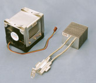

These
modular Heat-pipe units offer one of the most optimal solutions for
providing practical and lightweight, performance cooling of power
semi-conductors. Typically, they are used in traction applications to
cool electronic drive controllers. Simply to install, the units require
no maintenance other than occasionally cleaning. Power Rating:
Typically these units are normally designed to handle 2 kW to 3 kW per
module with fan force air cooling.
Heat-pipe Processor Coolers

Processor
cooling is an ever increasing and demanding challenge. Heat-pipe
cooling provides an optimal solution. Direct finning to the Heat-pipe
is very effectively utilised as the Heat-pipe very evenly distributes
the heat flux to each fin, and therefore higher fin bank efficiencies
are possible than can be realised with conventional finned heat sinks.
Rating: Performance typically 0.35°C/W with 70 W dissipation, although
better than 0.09°C/W is also possible.